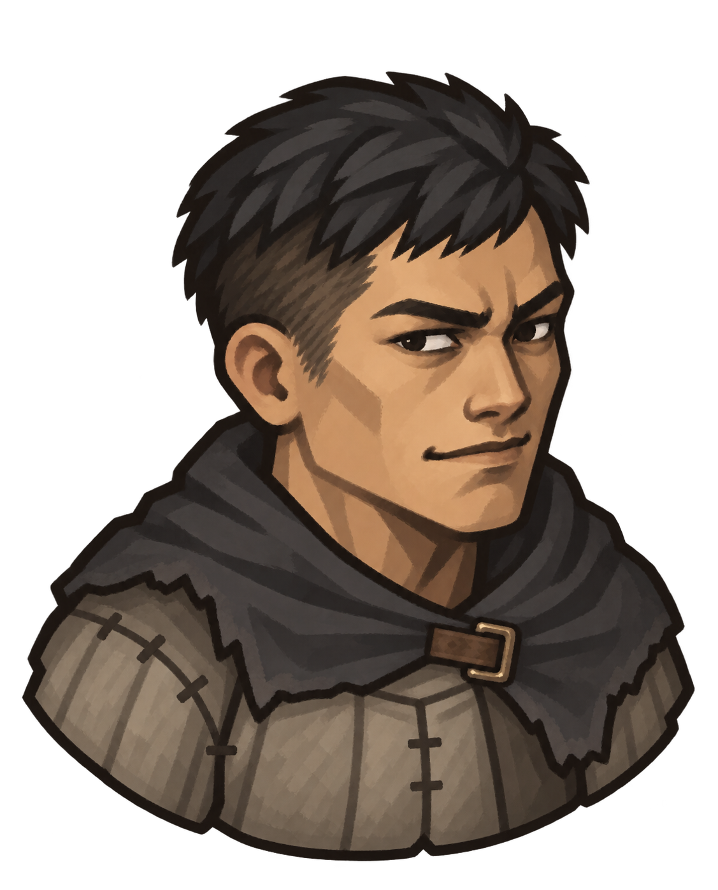
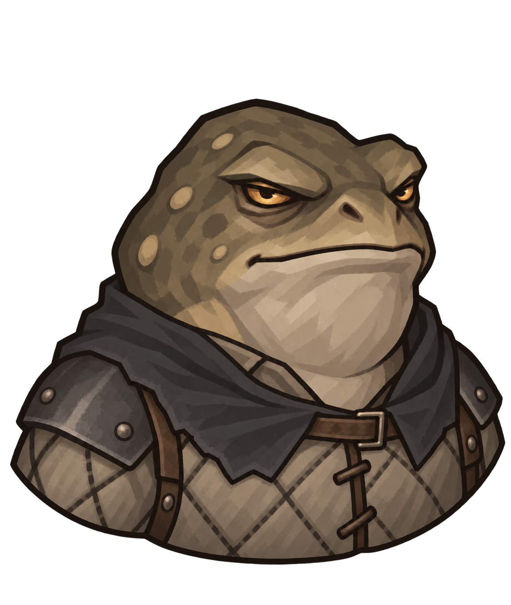
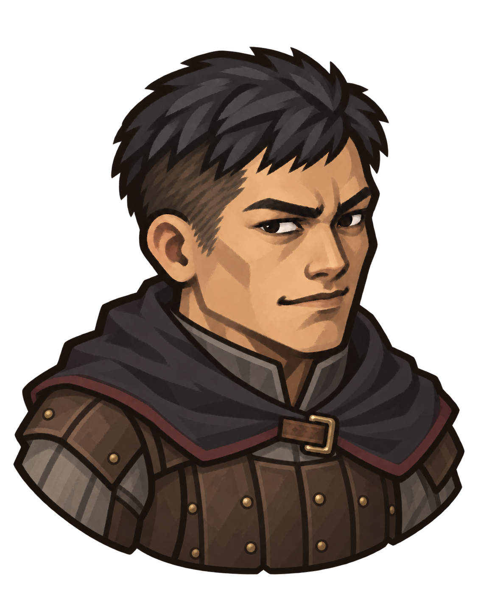
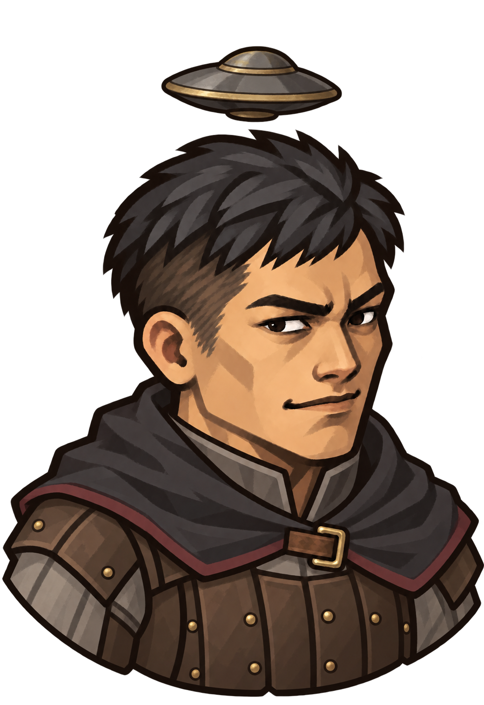
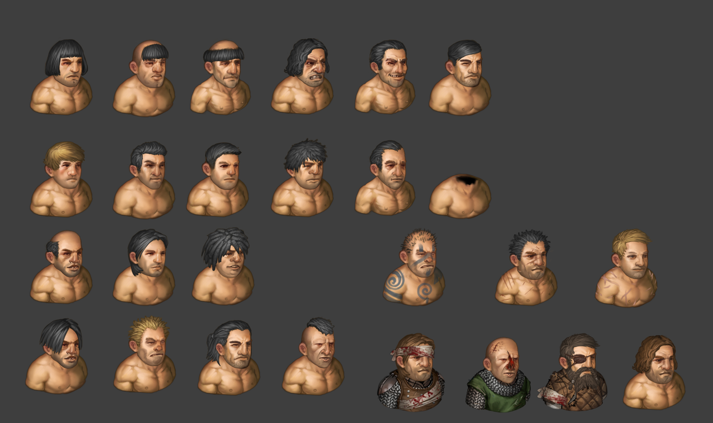

起点 / 已获初步认可
正常形态
平时嘉豪，大事拎得清

候选图待保存短黑发、痞帅神态与朴素装备。后续形态以这张的脸和绘画方式作为比较基准。
缩小后看一眼114 × 142 观察窗口
看五官与轮廓是否清楚
看五官与轮廓是否清楚
大飞午远征团 / 人物造型讨论
同一个阿飞，不同的成长方向。一起看气质、轮廓与色块。
起点 / 已获初步认可
平时嘉豪，大事拎得清

候选图待保存短黑发、痞帅神态与朴素装备。后续形态以这张的脸和绘画方式作为比较基准。
分支转职 / 造型候选
自己能打

候选图待保存保留蛤蟆辨识度与冷脸凶相，比较它是否够帅、够有力量感，认真时能压住场面。
分支转职 / 造型候选
带人

候选图待保存从需要照应的新人，长成能鼓舞伙伴的大哥。比较是否保留痞气，又更有带队的自信。
隐藏转职 / 造型候选
自己能打，也能带人

候选图待保存“飞爹”的谐音梗，落在头顶的小飞碟上。比较装饰是否一眼能认出，同时仍像队伍里的阿飞。
当前用于透明 PNG 母图的造型比较，尚未适配换装、受伤与死亡状态。飞碟图为嘉豪主体与头顶装饰的合成预览，独立装饰层尚未制作。小观察窗口只帮助判断缩小后的辨识度，不代表游戏最终规格或实机效果。
